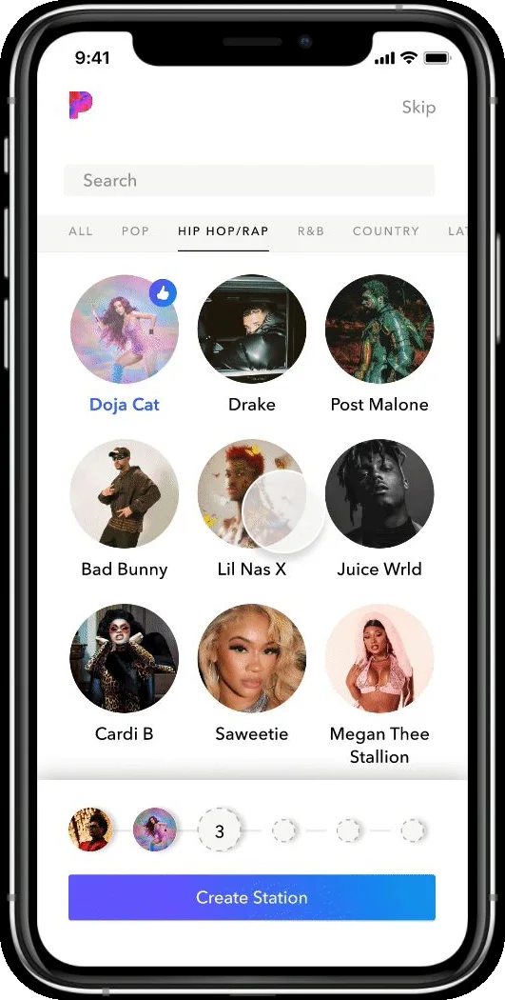
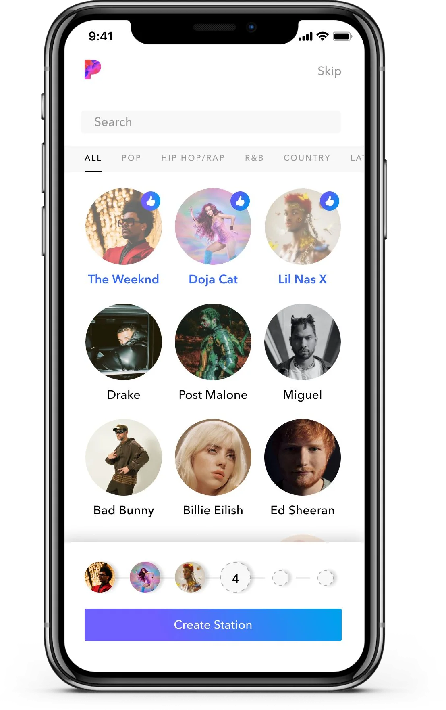

Each choice narrows the next
When a person gives the AI several inputs in a row, use each one to make the next easier to give, so the task gets lighter as the system learns.
Where it sits in the flow
- AskThe person has a question, or a thing they want to find.
- AnswerThe AI returns something: an excerpt, a marker, a segment, a generated answer.
- CheckThe person looks at the evidence and decides whether to believe it.
- DecideThe person acts: proceeds, moves on, or corrects the AI.
What users needed
People choosing several things in a row needed each choice to be easier than the last, not the same blank grid again. In testing, they also needed to see what had changed after a choice: when related options appeared without a visible reason, everything seemed to shift, and people lost their place.
The problem
Some AI features need several inputs before they can do their work well: a few examples, a few preferences, a few labelled items. The cheap way to collect them is to show the same full list each time and let the person hunt. Every round costs the same effort as the first, and the system's growing knowledge of the person is invisible to them until the very end.
The pattern
Let each input reshape the next. After every choice, bring forward the options the system now thinks are most likely, close to the choice that produced them, and let the rest fall back. Make the movement legible: the new options should visibly arrive, and the person should be able to tell what caused them. The task gets lighter with each step, and the person can see the system learning.
Decide the rules for undoing as carefully as the rules for adding. Taking a choice back should not yank away everything it brought in, and choosing it again should not bring in a second copy.
What makes it hard
Motion is doing the explaining here, so it has to be exactly right. Options that pop in abruptly, or shift the whole layout, read as a glitch rather than a suggestion; options that arrive below the fold are never seen. The related options also have to be good enough that the person recognizes them as theirs, or the list fills with noise and the shortcut becomes a detour.
When it fails
If the related options are poor, the person has to scroll past them to find what they wanted, which is worse than a plain list. If the layout jumps, people cannot tell what they chose. If undoing a choice removes the related options too, the person is punished for changing their mind, and if re-choosing adds them again, the list grows without end.
The accessibility dividend
Options that arrive in a predictable place, with a reason the person can name, are options a screen reader can announce in order. The same discipline that keeps the layout from jumping keeps the focus order stable for someone using a keyboard.
In my work
In Pandora's onboarding, each time a new listener picks an artist, the interface brings three artists with a strong relationship to that one into the rows directly below, pushing the others down so the new ones visibly make room for themselves. Choosing gets easier with each pick, and the system gets a clearer picture of the listener's taste, until all six slots are filled. Unselecting an artist leaves its related artists in place, and reselecting does not add more.
In pictures


Also written about in
- When design serves hundreds of millions: how one designer helps complex systems truly work. Xinhua Net, February 3, 2026, in Chinese: Xinhua Net.